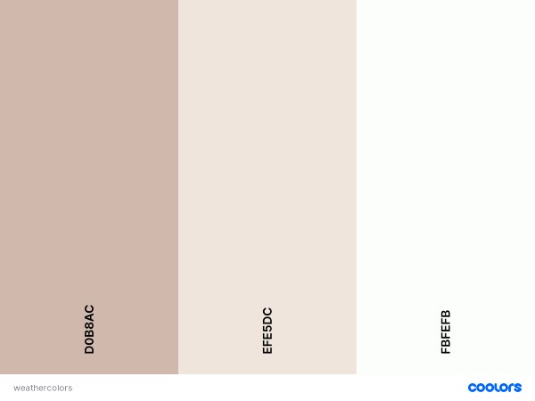

Color Scheme
I choose these three colors because they were very subtle colors that went together. I also really liked the contrast of the logo with the selected colors. I wanted to make sure that the website colors did not clash and that they did not draw attention from the content.
